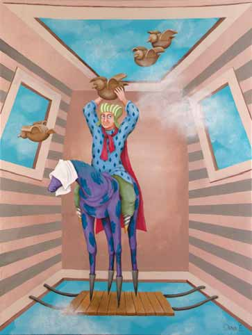

In the summer of 2007, just a few weeks before I began to write my own book, I read an article by Paul Levy in the Dream Network Journal that introduced his book titled The Madness of George W. Bush. I was impressed with the beginning of Paul’s article, which held a profoundly significant truth that few seem to fully understand. He stated, “We live in a world where the deeper, underlying mythic patterns that have endlessly reiterated themselves throughout human history are incarnating and revealing themselves through world events for all who have eyes to see.” This is a truth reflected in his book that remains a valuable contribution, despite the fact that Bush is no longer in power. If we are not thoughtful, the mythic patterns Levy addresses will find their way back into our collective experience. I have come to understand that not only do these mythic patterns reveal themselves in world events, as Levy pointed out, but they are continuously revealing themselves in our personal lives, as well.
For those of us who have been schooled in Shakespeare or in Jungian, humanistic, transactional, or transpersonal psychology, or even Freudian analysis, it is clear that much of who we think we are, in fact, is comprised of roles we play in a world that is but a stage. Each of us has our own unique dramas and traumas that weave in and out of the not so unique parts we play. We put on the costumes and don the masks that fit the part we play and we live from the roles instead of from our true selves. In As You Like It, Shakespeare described the 7 stages of a man’s life from infant to old man, during which there were expected actions played out. Jung saw us acting out of personality types and subtypes, in the stages of our lives, all with recognizable actions and reactions to the world around us, with the ultimate objective of becoming individuated beings embracing our whole Self.
We can see our roles played out in relationships in terms of the Karpman Triangle, where we take on the part of rescuer, victim, or persecutor and each position holds a set of behaviors that attempt to control the other as a way of creating whatever feels missing in life. Sometimes, we play from one position and, later, switch to another when our primary role doesn’t seem to be working. Or, we can look at the American Psychological Associations, DSM IVR and see the behaviors that are characteristic of dysfunctional roles people play, with predictable dialogue, scripts, and outcomes. And, if we are willing to be completely honest, most of us can find ourselves in at least some of the categories of pathology on any given day.
From this perspective of lives made of roles and scripts acted out on the stages of our lives, it is easy to see how many of us experience waking dreams or nightmares that keep coming back to us again and again, that contain seemingly a never-ending replay of suffering, emptiness, and disconnection. Some of us find a way to escape the nightmares of waking life with diligence, and focus on goals of great accomplishment, but even in success, find emptiness or meaninglessness in the end. What we try to escape in our waking lives can disturb us in our dreams, making sleep something we avoid or cannot find, and we fill our waking lives with distractions to avoid looking at what is not working, even if the distraction is to only look at what is working. Far too many of us feel as if the light has gone out of our eyes so very early in our lives and few seem to make it to the golden years, with that beautiful light still emanating from deep within. Many quake with unexpressed anger throughout their lives, only to have that anger reflected in body dysfunction in the late years or they quietly slip away trying desperately to not remember the failure of the roles they played in life.
All of this—the mythic patterns played out on the global level, the scripted patterns played out in our individual lives, the relationships we enter with such hope that lead to disappointment, the unsuccessful attempts at finding freedom from the unpleasant patterns, and the dreams and nightmares we have while we sleep, that reflect what we won’t let ourselves see in waking life—are the experiences our true self draws to us to help our disconnected self wake from our personal and collective mythic sleep.
Each of us—with all the truths and lies, the light and darkness, the consciousness and unconsciousness, and the unfathomable capacity for both good and evil—contains a unique spark of the God, a truth that most of us have long ago disowned, forgotten in some distant past incarnation, and we shutter to consider the possibility of this as the truth. Despite our experience of separation and the roles we play to distract ourselves from the pain of this experience, we may well be evolving toward a shift in our understanding of ourselves that will allow us to awaken and remember who we truly are, to release the individual and collective stage, the scripts, and the roles we have been playing and the masks we have worn our whole life, if not for lifetimes, and live from our authentic and unique God and Goddess selves.
This idea of waking from the dream is not new, and certainly, the ideas I have expressed have been written before I penned these words on virtual paper. But, you might ask, what do these ideas mean in your everyday lived life?
From the perspective expressed herein, everything in your life, whether waking or dreaming (and some would say there is no difference between our waking and dreaming selves), creates reflections to help you see what you believe, to help you recognize that you are the creator of your life experiences that, too often, repeat themselves over and over again in different forms until we recognize that we have created them and have a choice to continue or to stop these creations.
A painful event in your childhood might have caused you to believe in loss and your entire life has been peppered with struggles related to loss as a theme: loss of love, loss of connection, loss of financial security, loss of respect, and on and on. Or, you might live a life attempting to hold on to everything, while underneath, what fuels the holding on is that belief in loss. You might believe in sacrifice, which is reflected back to us in multigenerational sacrifice, whether as war hero, as martyr, as defender of the weak or downtrodden. You sacrifice yourself and experience the sacrifice of others. You might believe in powerlessness and spend your whole life suffering at the hands of others, or find yourself fighting for power, a fight that you never quite win. But if you do win it, you are never safe in the winning, because of the fear that whatever you might be able to grasp will be snatched away from you if you are not hyper vigilant. Deep within there is still a belief in powerlessness.
You might believe in power and find that you possess it, but some early event caused you to believe you cannot possess love. As powerful as you become, you are unable to maintain love in your life. Or, you might believe in love, but not that you can have both love and power, so your life is surrounded by those you love in a disempowered state, never realizing that you created what you believed.
This idea that we create our own lives and experiences is not easy to embrace. It can feel like an unjust judgment, especially when circumstances that impact us seem to be completely of someone else’s making. But once understood, the awareness we gain can provide the doorway to the life we came to live. When we learn to embrace our responsibility without attaching blame, guilt, shame, or punishment, we can discover the myths we have held, the beliefs to which we have attached that draw to us those conditions upon which we build—or tear down—our lives.
The Western world holds such a limited understanding of who we are. Its commitment to individualism negates the reality that much of who we experience ourselves as being, is a collection of individual and cultural mythic patterns and roles created generations ago, and, perhaps, lifetimes ago. While we are living our beliefs as individuals with the masks that we wear for the roles we play, we are, also, living the beliefs of our parents and grandparents, and the collective beliefs of our cultures and our species. But, even this more expanded view of ourselves as the current embodiment of a collective past, is not who we truly are. This identity, this image we hold that we call us, is simply a reflection of the beliefs or what Levy referred to as the mythic patterns that cover the unique being that we are, a being that most of us have never known exists.
We are living in a time when we have the opportunity to become conscious of our beliefs by being willing to examine the dreams and the life experiences we draw to us, whether the dream comes to us in our sleep or in our daily life. When we look at what we are individually and collectively creating, we can recognize the masks that we wear and discover who we truly are under the mask. And as the amazing sparks of God that we are, finally, we can be free to choose the lives we want to create.
From the fall of 2007 to the winter of 2008, I wrote a book about my own journey to examine what I created in my life to discover what beliefs prevented me from knowing who I truly am. As this work was coming to a close, I became aware that what I had written was not just for my own journey, but also, was written to offer a perspective that might assist others in discovering who they truly are. This book, The Meaning of Three: The Mask, reveals so many of the mythic patterns played out in one individual life and explores ways of becoming free of those patterns. Once we remove the mask to discover and embrace who we truly are, the patterns and roles melt away, and what remains is the essence of who we are, who we have always been, finally uncovered and free to live as the unique being that we are, eternally in union with the Great Mystery…the Creator of all that is… including us. ∞